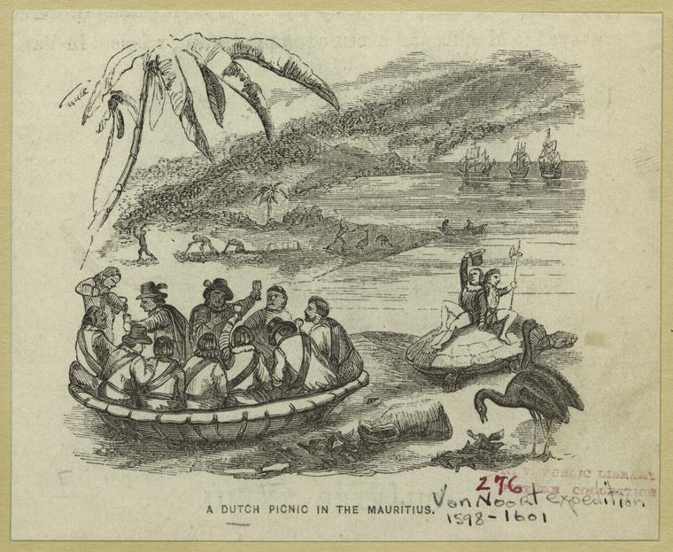
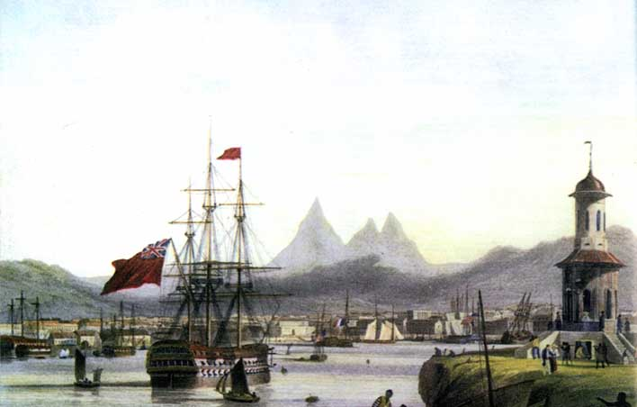
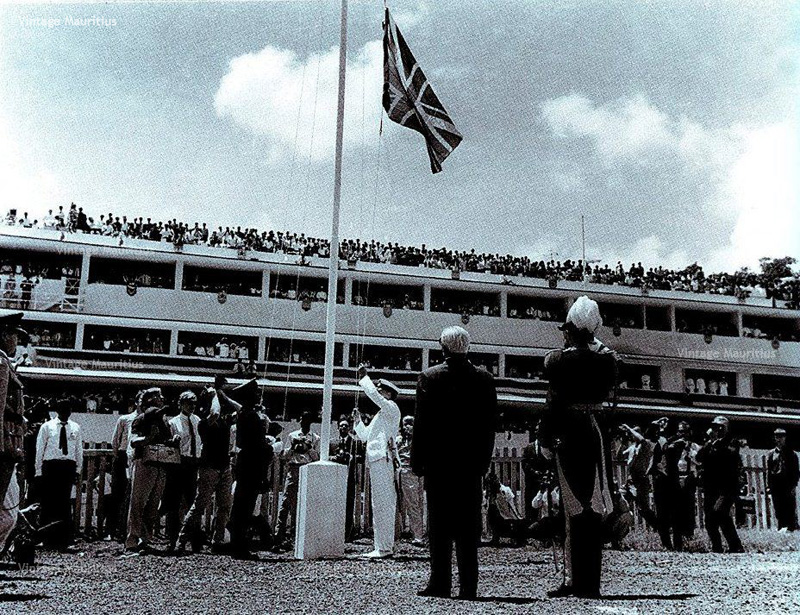

About Mauritius
Learning about Mauritius history is quite fascinating. It is interesting to study the past which contributed a lot to the nowadays identity of Mauritius.
Due to lack of documentary evidences from the first period in which the island was discovered it’s difficult to know the exact date events occurred. Known fact is that the Arabian were the first to get on the island in the 10th century naming the island Dina Arobi (Desert Island). It is also known that they were followed by tribes of Malays, but very little information is available about that period.

Portuguese Period (1511)
The Portuguese was the first European to land on the island at around 1511. Don Pedro Mascarenhas gave the name Mascarenes to the group of islands now known as Mauritius, Rodrigues and Reunion. The Portuguese did not stay long as they were not interested in those islands.
The Dutch Period (1598 - 1710)
In 1598, a Dutch squadron, named the island "Mauritius", in honour of Prince Maurice Van Nassau of Holland.
However, it was not until 1638 that there was a first attempt of Dutch settlement. The first Dutch settlement lasted only twenty years. They are remembered for the introduction of sugar-cane, domestic animals and deer.
The French Period (1715 - 1810)

Abandoned by the Dutch, the island became a French colony in 1715. The island was named "Isle de France".
Under the French occupation, numerous buildings were built, a number of which are still standing today - part of Government House, the Chateau de Mon Plaisir at Pamplemousses and the Line Barracks.
In 1810 a strong British expedition was sent to capture the island. "Isle de France" regained its former name `Mauritius'. In the act of capitulation, the British guaranteed that they would respect the language, the customs, the laws and the traditions of the inhabitants.
The British Period (1810)
The British abolished slavery and this had important repercussions on the socio-economic and demographic fields.
The planters turned to India, from where they brought a large number of indentured labourers to work in the sugar cane fields. They were later joined by a small number of Chinese traders.
Cultivation of sugar cane was given a boost and the island flourished, especially with the export of sugar to England.
Mauritius Independence (1968)
Following Constitutional conferences held in London in 1955 and 1957, the ministerial system was introduced and general elections were held on 9th March 1959.
In 1961, a Constitutional Review Conference was held in London and a programme of further Constitutional advance was established. It was followed in 1965 by the last Constitutional Conference which paved the way for Mauritius to achieve independence.
After general elections in 1967, Mauritius obtained its independence on the 12th march 1968 within the commonwealth with Seewoosagur Ramgoolam as prime minister. The island achieved the status of Republic 24 years later on 12 March 1992.